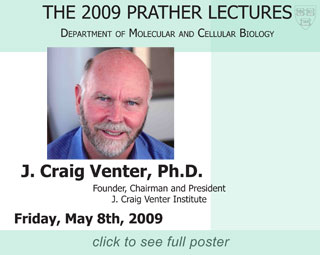

News Archives : 2009 : J. Craig Venter to Give Prather Lectures May 8
by George Church
April 27, 2009
|  | |
This year's Prather Lectures will be delivered by J. Craig Venter, Founder of the J. Craig Venter Institute and Synthetic Genomics Inc.
Venter, a world expert on Reading and Writing genomes, took his Ph.D. in Physiology and Pharmacology at the University of California-San Diego in 1975, spent nine years as a professor at SUNY-Buffalo, before moving to the National Institutes of Health in 1984.
In 1992, Venter founded The Institute for Genomic Research (TIGR) and Human Genome Sciences, Inc. (HGS), and proceeded to change the field of genomics (and biology) by shotgun sequencing mRNAs and some of the first complete microbial genomes. Later, at Celera Genomics, his team went on to sequence the first Drosophila and human genomes. He has since conducted major surveys of oceanic 'metagenomes' – funded in part by the U.S. Department of Energy – from which his team hopes to 'mine' genes that could be helpful in developing biofuels.
Venter has had an unusual capacity to raise public awareness of science and technology as well as the related ethical and policy issues. These include best practices in constructing novel minimal life-forms, via methods like 'watermarking'. Thus, his name is encoded at position 84,835 of the largest (582,970 bp) synthetic genome.
Dr. Venter has received numerous honors, including election to the U.S. National Academy of Sciences and the Gairdner Award in 2002. He has been the subject of many magazine articles and documentaries, as well as at least five books: Masterminds, Genome, The Genome War, The Common Thread, and A Life Decoded.